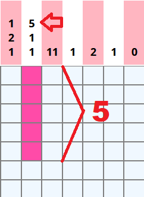
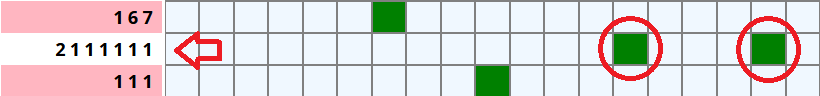
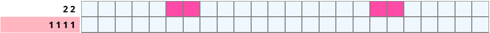
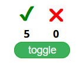
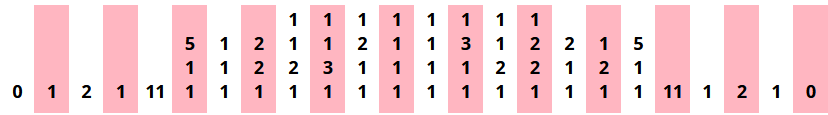
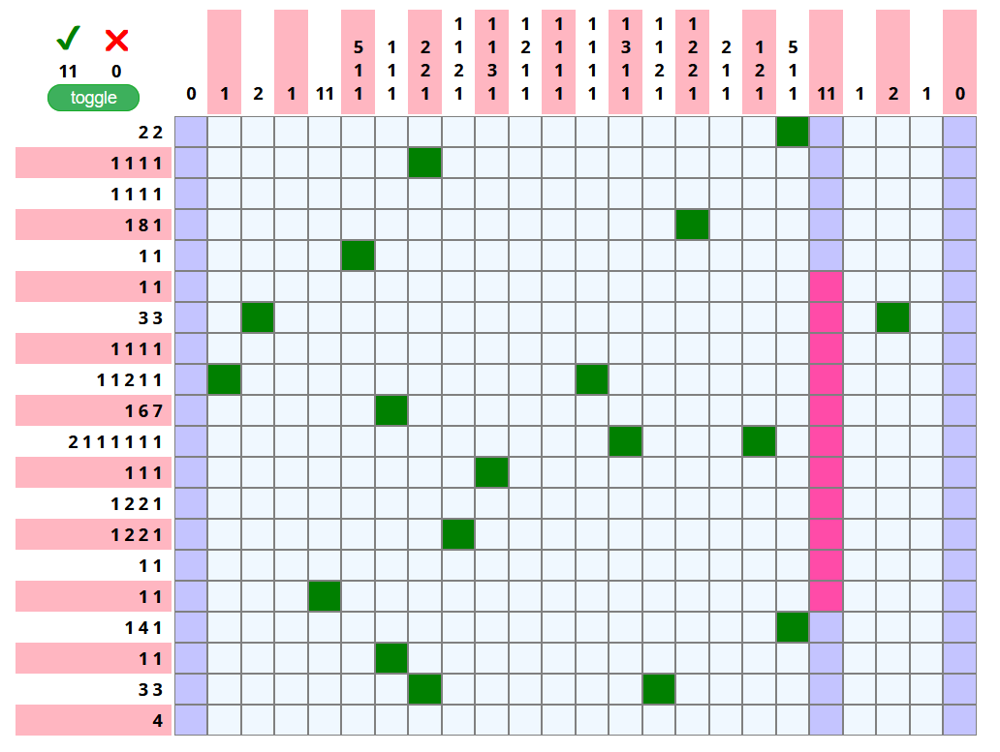

基本ルール
このパズルを解くには、表の上部と左側にある数字でマークされたドット（マス目）を塗り潰す必要があります。数字は、行と列の両方に塗り潰す必要があるドット（マス目）の数を示しています。ドット（マス目）を塗り潰す場所を知るには、行と列を一致させます。パズルが解かれると、塗り潰れた点が絵になります。
たまには 1 桁を超える数字がある場合、それは塗りつぶされたドット（マス目）の間に 1 つ以上の塗りつぶされていないドット（マス目）があるのことです。
もう一つの例。
ヒント
このゲームにあまり時間がかからないように、ヒントをいくつか作りました。どのドット（マス目）を塗りつぶすかを示すマークがいくつかあります。迷子にならないように、また推測の余地を減らすのに役立つことを願っています。
ドット（マス目）カウンター
正しいドット（マス目）と間違ったドット（マス目）がどれだけ塗りつぶされたかを示すカウンターを実装しました。これにより、間違ったドット（マス目）が正確にいつ塗りつぶされたかを知ることができます、最初からやり直さなくて済みます。正しいドット（マス目）が 101 個、間違ったドット（マス目）が 0 個になると、パズルは解けます。
対称
表の上部、列の数字がマークされている部分を見ると、中央から見て左右で数字がほぼ同じであることがわかります。 これは、パズルの画像がほぼ対称であり、片側で塗りつぶされたドット（マス目）は、ほとんどの場合、反対側でも塗りつぶされることを意味します。パズルを解くのは半分だけです。(このノノグラムでは！)。
右クリックでマーク
塗りつぶされていないドット（マス目）をマークすることができます。 塗りつぶされていないドットをマークすることは、ノノグラムを解く上で重要な部分であり、不明な部分で何をするべきかを分かってるのに役立ちます。
